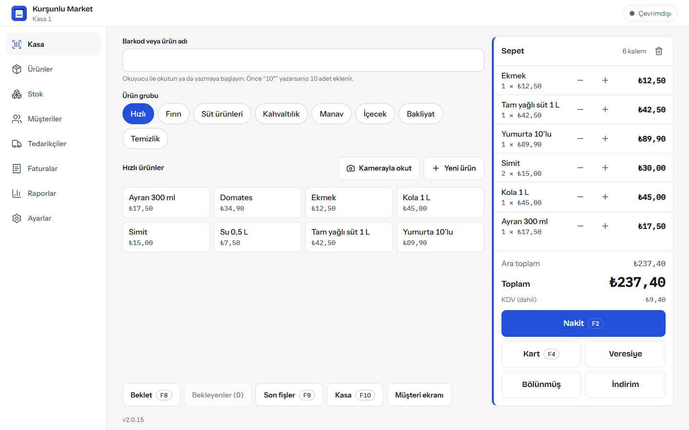
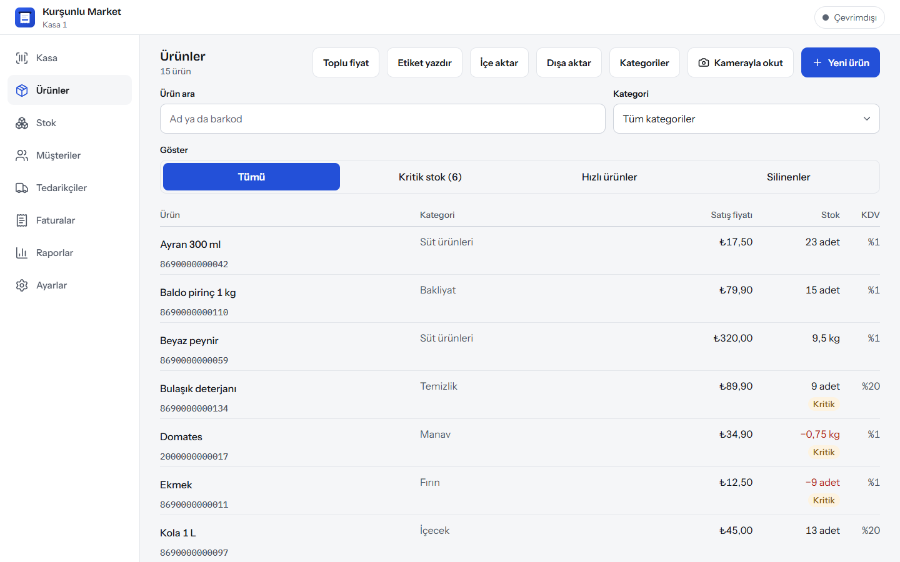
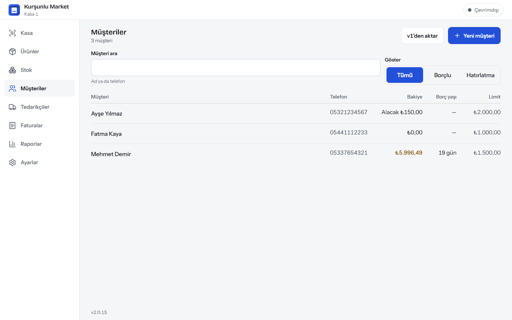
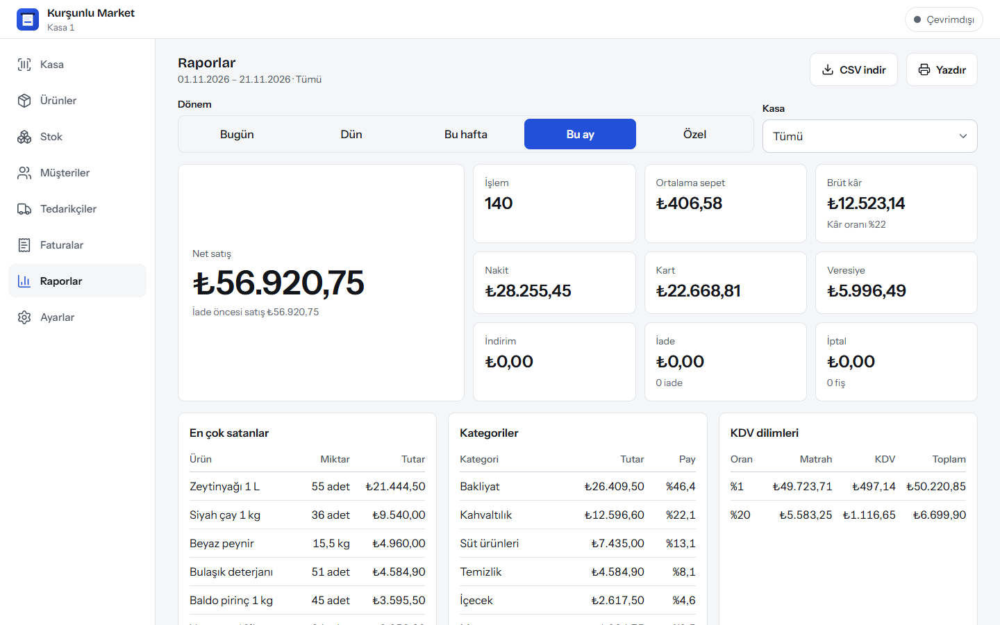
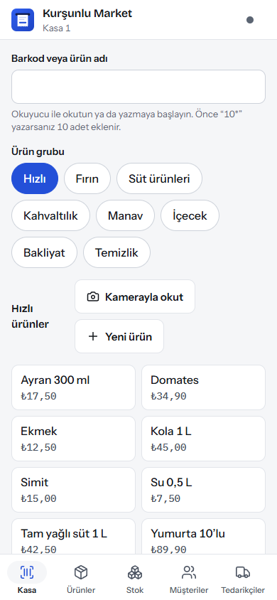

Windows
Kasa bilgisayarı için. Yazıcıya doğrudan fiş basar.
“Bilgisayarınız korundu” uyarısında Ek bilgi → Yine de çalıştır. Yeni sürümler Ayarlar → Güncelleme'den tek tuşla gelir.
Sürüm 2.0 · Kurşunlu Market'te kullanılıyor
Barkodu okut, sat, veresiyeyi yaz. Market Kasa satışı önce cihaza kaydeder, internet gelince diğer kasalara gönderir. Bilgisayar, telefon ve tarayıcı aynı marketi görür.

Sade ekranlar, büyük düğmeler, klavye kısayolları. Kasiyer ilk gün öğrenir.
USB okuyucu ya da telefon kamerasıyla barkod, hızlı ürün düğmeleri, F2 nakit, F4 kart. Bölünmüş ödeme ve indirim tek dokunuşta.
Müşteri limiti, borç yaşı, tahsilat ve ekstre. Borçlulara WhatsApp'tan hatırlatma.
Raf sayımında fark kaydı, kritik stok listesi. Stok her hareketten hesaplanır, kaybolmaz.
Gelen mal faturasıyla girilir, yeni alış ve satış fiyatları orada güncellenir. Tedarikçiye borç, ödeme ve ekstre aynı yerde.
Satış, kasada kim çalışıyorsa onun adına yazılır. İptal, iade ve indirim yetkili onayı ister; her değişiklik iz kaydına düşer.
Ürün listesini Excel ya da CSV'den önizleyerek alın. Eski programın yedeğinden ürünler ve veresiye borçları gelir.



Terazinin bastığı barkod okunur; içindeki ağırlık ya da tutar sepete doğru geçer.
Ürün adı, fiyatı ve barkoduyla A4 etiket kâğıdına, sayfada 3 × 8.
Fişten fatura istenir ve sıraya alınır; sağlayıcı bağlantısı gelene kadar “beklemede” görünür.
30 gün içinde tarihi dolan ürünler Stok ekranında listelenir.
İkinci ekranda müşteri sepeti ve toplamı kasayla birlikte görür.
Okuyucu yoksa telefonun ya da tabletin kamerası barkodu okur.
Marketin bütün verisi tek dosyada: ürünler, satışlar, veresiye, tedarikçiler.
Windows'ta Ayarlar → Güncelleme'den tek tuşla; tarayıcı sürümü kendini günceller.
Bir kasada yapılan satış, stok ve veresiye diğerlerinde de görünür.
İnternet kesilirse satış sürer. Her işlem önce cihaza yazılır; kaç işlemin beklediği ekranın sağ üstünde görünür.
İnternet gelince kendiliğinden eşitlenir. Bekleyenler gönderilir, diğer kasaların işlemleri iner.
Şifre telefonda ya da kasada saklanmaz. Kaybolan bir cihazı market sahibi kapatabilir.

Kasa bilgisayarına Windows kurulumunu, telefona Android uygulamasını indirin ya da Market Kasa'yı tarayıcıda açın.
“Market kur” ile size verdiğimiz kurulum kodunu, market adını ve kendi e-postanızı girin. Kod tek kullanımlıktır.
Ürünleri ekleyin ya da Excel'den içe aktarın, personeli ekleyin, fişinizi ayarlayın.
Diğer bilgisayarda ya da telefonda aynı e-posta ve şifreyle “Markete giriş yap”: o cihaz marketin yeni kasası olur (K2, K3…).
Yeni bir market, bizim verdiğimiz tek kullanımlık bir kurulum koduyla açılır. WhatsApp'tan yazın, marketinize özel kodu gönderelim.
Kurulum kodu için bizimle iletişime geçin.
Ücretsiz deneme · Kurulum 2 dakika · Türkçe
Kasa bilgisayarı için. Yazıcıya doğrudan fiş basar.
“Bilgisayarınız korundu” uyarısında Ek bilgi → Yine de çalıştır. Yeni sürümler Ayarlar → Güncelleme'den tek tuşla gelir.
Reyonda sayım, kasada ikinci ekran ya da cepte rapor.
Telefon sorarsa bu kaynaktan yüklemeye izin verin. Yeni sürüm eskisinin üstüne kurulur, veriler kalır.
iPhone, iPad ya da herhangi bir bilgisayar. Kurulum yok.
Chrome'da “Yükle”, Safari'de “Ana Ekrana Ekle” ile uygulama gibi açılır ve internetsiz de çalışır.
Kodu biz veriyoruz. WhatsApp'tan yazın, marketinize özel tek kullanımlık kodu gönderelim; “Market kur” derken bu kodu girersiniz.
Satış, iade, veresiye ve stok çalışmaya devam eder. Her işlem önce cihaza yazılır; ekranın sağ üstünde kaç işlemin beklediği görünür. İnternet gelince hepsi gönderilir, diğer kasaların işlemleri de iner.
Her cihazda bir kopyası, bir de marketin sunucusunda. Her market yalnız kendi verisini görür; sunucu her isteği kimin yaptığını denetler.
Fişten e-Arşiv faturası istenebilir ve sıraya alınır. Fatura sağlayıcısı bağlantısı yakında; o zamana kadar istekler “beklemede” görünür.
Eski programda Ayarlar → Yedek İndir (JSON). Market Kasa'da Ürünler → İçe aktar ve Müşteriler → v1'den aktar ile ürünler, stok ve veresiye borçları gelir.
Windows'ta Ayarlar → Güncelleme'de “Güncelle” düğmesi çıkar; basınca indirilir ve kurulur. Android'de aynı yerde yeni sürümün indirme bağlantısı görünür. Tarayıcı sürümü kendini günceller.